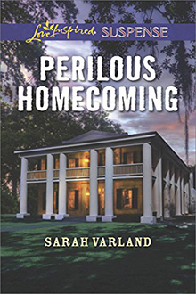

FATAL BOUNTY... When former Treasure Point police officer Kelsey Jackson witnesses a murder while temporarily back in her hometown, the killer is dead set on silencing her. The antiques insurance agent didn't see enough to know who killed the museum's curator…but she plans to find out. And the only person offering to assist in her investigation is Sawyer Hamilton—the last man Kelsey ever thought she'd rely on. The handsome marine biologist was once Kelsey's biggest rival, but now he's determined to make up for the past by protecting her. And when the clues lead to shipwrecks and treasure, Sawyer will risk everything to keep Kelsey out of the hands of modern-day pirates.